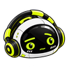

GX · Cautious
A concerned brow, a thoughtful glance, and a gently shifting mouth. Fixed lighting. Head and headphones only.

AUD/JPY · Conflicting signalsThe evidence is mixed. Check the conditions before deciding.
Bubble preview at 40px · demonstration copy
28px40px64px
Preview only. For conflicting evidence or elevated risk conditions. Reduced-motion preferences use the still image.